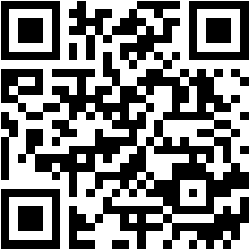

PEC 3: Panorámicas 360º con A-FRAME
UOC - Realidad virtual (semestre 2627/1)
Checklist de la práctica
-
✅ Escena 1 con fondo panorámico fijo (
<a-sky>): Fotografía panorámica equirrectangular 360º de un arrecife de coral. Incorpora un modelo 3D externo (pez.glb) con nado continuo, giro de 180º en extremos y reacción reactiva al cursor (mouseenterymouseleave). -
✅ Escena 2 con fondo panorámico de vídeo (
<a-videosphere>): Vídeo submarino 360º en formato MP4 compatible. Incorpora un modelo 3D de mantarraya (mantaraya.glb) con animación de planeo e interacción reactiva en el eje Z al apuntarla con el cursor, además de control de reproducción/pausa mediante botón. - ✅ Uso de iframe: Ambas escenas están incrustadas dentro de este documento web siguiendo el paso 7 del tutorial.
-
✅ Estructura y peso de entrega:
Archivo
index.htmlen la raíz y resto de archivos enrecursos/. El peso total del conjunto comprimido es de ~8.9 MB.
Repositorio y acceso móvil
Repositorio en GitHub: github.com/alfupe/pec3_realidad-virtual
Despliegue online (GitHub Pages): alfupe.github.io/pec3_realidad-virtual
Puedes escanear este código QR con el móvil para abrir la experiencia web y probar los giroscopios y el modo VR directamente.

Créditos
- Imagen panorámica 360º (Escena 1): Heron Bommie SVII por © Underwater Earth / XL Catlin Seaview Survey / Christophe Bailhache, bajo licencia Creative Commons Attribution-ShareAlike 3.0 Unported (CC BY-SA 3.0).
- Modelo 3D (Escena 1): "Stylized Butterfly Fish | Game Ready Model" por SammyCAnimations, bajo licencia Creative Commons Attribution (CC BY 4.0).
- Vídeo 360º (Escena 2): Fiesa underwater 360 video vr por Snicel 69, bajo licencia Creative Commons Attribution 3.0 Unported (CC BY 3.0).
- Modelo 3D (Escena 2): "Stylized Rare Stingray | Game Ready Model" por SammyCAnimations, bajo licencia Creative Commons Attribution (CC BY 4.0).
Declaración de uso de Inteligencia Artificial (IA)
Siguiendo las directrices institucionales de la UOC sobre el uso ético, crítico y responsable de las herramientas de Inteligencia Artificial en las actividades de evaluación, se detalla a continuación el alcance de su empleo en la realización de esta práctica:
- Herramienta utilizada: Asistente de Inteligencia Artificial (Gemini / Antigravity).
-
Objetivos perseguidos:
- Búsqueda y localización de recursos multimedia equirrectangulares (fotografía panorámica y clip de vídeo 360º) de temática submarina con licencias libres compatibles (Creative Commons) en repositorios abiertos como Wikimedia Commons.
- Redacción formal y normalización de los textos de créditos, atribuciones de autoría y licencias Creative Commons (CC BY-SA 3.0, CC BY 3.0 y CC BY 4.0) de los recursos multimedia y modelos 3D externos.
- Estructuración jerárquica y redacción técnica de la documentación del proyecto (
README.md) para el repositorio. - Generación mediante script del código QR optimizado para facilitar el acceso directo a la versión desplegada en GitHub Pages desde dispositivos móviles.
- Asistencia en la lógica matemática y de temporización para el suavizado de animaciones e interacción en A-Frame (cálculo de límites de patrullaje, rotación continua de 180º en extremos y velocidad de alejamiento y retorno de los modelos 3D ante eventos del cursor).
-
Instrucciones o prompts representativos:
«Ayúdame a buscar en Wikimedia Commons fotos panorámicas y vídeos submarinos 360º en proyección equirrectangular con licencias abiertas para usar en A-Frame.» «A partir de estos enlaces de Wikimedia y Sketchfab con licencias CC BY-SA 3.0 y CC BY 4.0, redacta el bloque de créditos formal para index.html y README.md siguiendo las buenas prácticas de atribución académica.» «Genera un código QR ligero en PNG que enlace a https://alfupe.github.io/pec3_realidad-virtual/ para integrarlo en la interfaz.» «Ayúdame a calcular la velocidad y rotación de un modelo 3D en A-Frame para que patrulle entre -1.7 y 1.7 en X y gire fluidamente 180º al llegar a los extremos sin saltos bruscos.» «Configura la interacción para que al enfocar la mantarraya con el cursor se aleje suavemente en el eje Z hacia el fondo marino y regrese al retirar la mirada.»
-
Respuestas obtenidas:
La herramienta facilitó enlaces y descriptores de búsqueda en Wikimedia Commons para localizar recursos equirrectangulares libres, aportó propuestas de redacción estructurada para la documentación y los créditos, generó el recurso gráfico QR y sugirió fragmentos de código con cálculos de coordenadas y eventos (
mouseenter,mouseleave) para la interacción en A-Frame. - Proceso de revisión, reelaboración y edición: El uso de la herramienta ha sido estrictamente instrumental, consultivo y de soporte técnico/editorial. La delimitación temática del entorno submarino, la selección final de los recursos multimedia y la comprobación directa de sus licencias originales, su recorte y transcodificación a formatos web óptimos (MP4 H.264 y JPG), la optimización manual de geometrías y texturas 3D para cumplir de forma estricta la restricción de peso (< 10 MB), el diseño de la interfaz web y la verificación del correcto funcionamiento en el visor web y en GitHub Pages han sido realizados, evaluados y validados íntegramente por el estudiante.